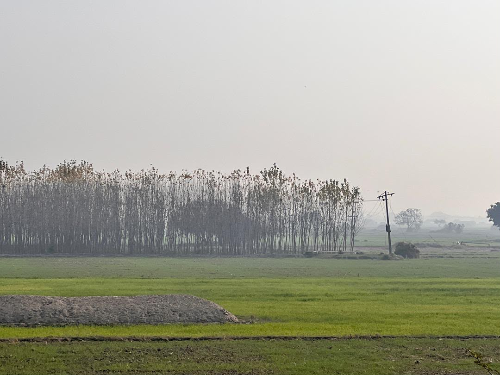
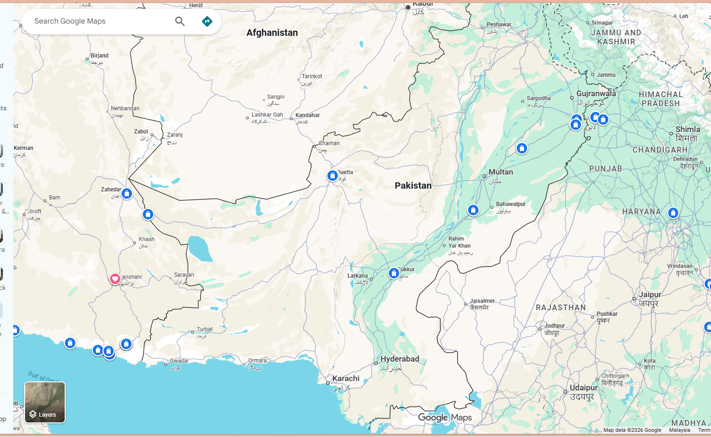

Real Story · 中文
Pakistan 不是没有故事，而是 Iran visa 的期限一直在前面拉着我走。
进入 Pakistan 之后，我其实很想慢慢看这个国家。 可是我的 Iran e-visa 会在 03/01/2024 到期，所以我不能在 Pakistan 停太久。 那段时间，我基本上一直往西开，尽量跟着 highway 走，目标是继续往 Iran 前进。
对 overlanders 来说，这条路不只是普通 highway。 其中一个重要路线是先开到 Sukkur，然后往 Quetta，再从 Pakistan 进入 Iran。 因为 Pakistan 和 Afghanistan 边境一带有 tension，某些路段 Pakistan authority 会安排 levies escort。 所以这段旅程不是“想停就停、想绕就绕”的自由旅行，而是 timing、route、documents 和 security procedure 一起决定的路。
也因为这样，我在 Pakistan 停留的时间比较短。 有些地方只能从车窗看过去，有些风景只能变成一张照片，有些故事只能留下一小段。 但是 Pakistan 不是空白的。即使是赶路，它也有田野、有冬天、有高速公路、有帮助我的人。

Route Context · Overland Corridor
Sukkur, Quetta, and the road toward Iran.
The Pakistan chapter carried an operating constraint. Tuzi was not simply choosing a scenic route; she was moving within a westbound overland corridor shaped by visa timing and security procedure.
For overlanders heading toward Iran, one known route is to drive toward Sukkur, then Quetta, and continue toward the Iran border. From Sukkur onward, authorities may arrange escort by levies because of the sensitive security context around the wider Pakistan/Afghanistan border region.
This made Pakistan a fast road for Tuzi. Not because there was nothing to see, but because the Iran visa deadline was already waiting ahead.
22/12/2023 · PK M3 Rest Stop
Warm water in winter.
On 22/12/2023, Tuzi parked at PK M3 Rest Stop along the highway. It was winter in Pakistan, and the road was cold. One restaurant staff member noticed her situation and brought her warm water.
It was a very small act. But on a solo overland journey, small warmth becomes memory. A pile of warm water at a highway rest stop can feel like care, shelter, and human recognition.
English Memory Summary
A fast road, but not an empty one.
Pakistan became a fast westbound chapter because Tuzi’s Iran e-visa would expire on 03/01/2024. She had to reduce her time in Pakistan and continue along the highway route toward Sukkur, Quetta, and Iran.
The route also carried security procedures for overlanders: from Sukkur toward Quetta and the Iran direction, authorities may arrange levies escort due to the sensitive regional context near Afghanistan. Yet even inside this fast corridor, Pakistan still gave her quiet fields and roadside kindness.
Heart Statement
Pakistan 不是没有故事，而是 Iran visa 的期限一直在前面拉着我走。
我没有办法慢慢打开 Pakistan。 可是它还是留下了自己的记忆：田野、highway、escort route、冬天，还有一壶暖水。
Pakistan was a fast road for me, not because it had no stories, but because the Iran visa deadline was already pulling me west.